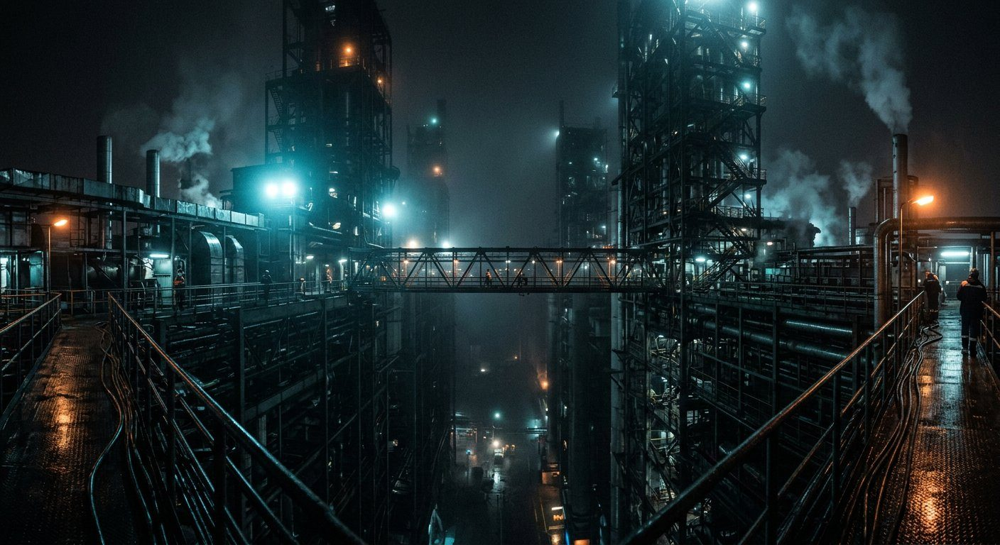

La carte où l’on meurt en trente secondes, et le mode où l’on joue le gardien
Space City est dense, verticale, et ses sorties changent d’un raid à l’autre. C’est aussi la carte qui accueille Polaris Patrol, le mini-mode où tu incarnes la sécurité Haavk au lieu de l’attaquer.
Conditions à revérifier

Un dédale avec des repères
Commandement central au nord pour t’orienter, zone de lancement au sud, et au centre quatre noms à connaître : Test Range, Centrifuge, Buoyancy, Black Chamber.
Les cinq repères à mémoriser
Commandement central : ton point cardinal. Si tu es perdu, tu regardes où il est, pas où tu es.
Zone de lancement : au sud, liée à la sortie par mission de la fusée.
Test Range et Centrifuge : les deux leviers qui ouvrent la sortie du pont suspendu.
Buoyancy et Black Chamber : les deux zones à commutateur, dont l’emplacement change à chaque raid, avec le bureau du directeur juste à côté.
Passage employé : la carte d’accès qui te permet d’entrer dans le noyau sans t’engager immédiatement dans un duel.
Règle de survie : ta sortie se décide après avoir choisi ta route de butin, jamais avant. Sur cette carte, c’est le trajet vers la sortie qui tue, pas la salle que tu pilles.
Trois sorties, trois risques
Sans sacLa plus sûre
Retirer le sac, puis attendre
Tu abandonnes ton sac à dos avant de lancer le compte à rebours. Parfait pour l’antenne Satcom (2×2), inutile si tu portes du butin volumineux. C’est la sortie qui sauve un raid mal engagé.
Deux leviersExposée
Test Range + Centrifuge
Actionner les deux leviers ouvre une zone près du pont suspendu. L’endroit est ouvert, donc vulnérable : c’est là que les équipes qui contrôlent le sud interceptent. Fume avant d’entrer, ne t’aligne pas.
Mission fuséeLongue
Operation Ascension
Activer l’objectif, défendre la plateforme, survivre aux étapes minutées. La plus longue et la plus visible, mais celle qui accepte le butin lourd, le carburant de fusée ne rentre pas dans le coffre sécurisé.
Le carburant de fusée et l’antenne : deux objets qui n’existent qu’ici
Ils ne s’achètent pas au marché ni aux enchères. Il faut les trouver sur la carte et les sortir vivant, exposés dans le sac.
Carburant de fusée (3×4, sac uniquement) : apparaît souvent dans le bâtiment du commandement central, près de la porte arrière ; vise la sortie par hélicoptère à Test Range (deux leviers) ou la sortie du pont.
Antenne Satcom (2×2) : apparaît à Centrifuge, sur la passerelle surélevée, près du levier de sortie et sur les bureaux ; la sortie sans sac est la plus simple.
Deux attentes réalistes : les joueurs rapportent des raids entiers sans rien trouver, et la difficulté Normale donne un meilleur pool que Facile. Enfin, décide de ta sortie avant de ramasser l’objet : un carburant que tu ne peux pas porter jusqu’au pont ne vaut rien.
Space City tourne en rotation : vérifie que la carte est disponible avant de bâtir une session de farming autour d’elle.
Polaris Patrol : jouer le gardien
Comment ça marche
Deux identités : la directrice de la sécurité Desmoulins, ou un adjudant (garde lourd, garde des communications, débloqués par défaut). Entrer en Desmoulins coûte un badge de travail ; un adjudant ne peut entrer que si un Desmoulins est dans l’escouade.
Badges : achetables à la station d’approvisionnement pour 250 000 Tekniq pièce, quatre au départ, un emplacement restauré toutes les 21 heures, huit stockables au maximum.
Cartes : City Normal et AZ3 Normal, plus City difficile en Opération difficile.
Neutralité : les unités Haavk ne t’attaquent pas, sauf les unités Hudson. Tu te bats contre les opérateurs G.T.I., pas contre les PNJ alliés.
Accès exclusif : Desmoulins utilise l’ascenseur exécutif et sa sortie dédiée dans le jardin. Si les G.T.I. la tuent, ils peuvent ramasser sa carte d’accès dans la mezzanine et emprunter le même raccourci.
Ce que ça change en jeu
Véhicule piégé chercheur : un engin qui avance, détecte, verrouille et explose. À jouer comme une sentinelle mobile, pas comme une grenade.
Analyse de faiblesse : les cibles touchées réparent leur armure plus lentement, se soignent moins vite, et saignent davantage au sol. C’est une capacité de pourrissement, pas de burst.
Adjudant, fusée éclairante qui balaie la zone, ou grenade à détonation aérienne ; les deux peuvent se coller au véhicule piloté. Le trait commun, Haavk Elite, accélère l’adjudant quand Desmoulins ou le véhicule blesse un opérateur proche.
Côté G.T.I. : tuer Desmoulins donne des points de performance et une chance de trouvailles rouges dans la mezzanine. Le mode récompense donc les deux camps, ce qui évite l’effet « gardien introuvable ».
Ce qu’il faut retenir de cette carte : sur Space City, la connaissance des sorties vaut plus que la précision, et l’objet rare ne vaut rien s’il reste dans le sac d’un cadavre. En Polaris Patrol, tu ne joues pas un opérateur plus fort : tu joues un rôle qui ralentit l’adversaire, soigne, répare et saigne plus lentement, pendant que tes coéquipiers avancent.
Trois opérateurs qui prennent la carte au sérieux
Space City est décrite par les joueurs comme une carte verticale à longues diagonales. Cette combinaison favorise trois profils précis, et en défavorise un quatrième.
Luna : le marquage à travers les étages résout le problème principal de la carte, à savoir ne pas savoir ce qui se passe deux niveaux au-dessus. Ses lignes de vue longues rendent aussi les fusils de précision rentables.
Shepherd : ses drones et son contrôle de couloir valent cher dans les intérieurs, et Space City en est pleine. En extérieur, il perd l’essentiel de son intérêt.
Gizmo : ses mines à toile sur les transitions verticales, escaliers et ascenseurs, transforment un accès en piège. C’est l’opérateur qui demande le plus de connaissance de la carte, et qui rapporte le plus quand on l’a.
À éviter en première intention : les profils qui misent tout sur le corps à corps. Sur une carte qui se joue à deux étages de distance, on meurt avant d’arriver.
Adéquations de kit tirées de guides et de discussions communautaires de 2026. Aucun taux de victoire par opérateur n’est publié.
Les trois erreurs qui coûtent un raid ici
Découvrir sa sortie à la dernière minute. Avec des commutateurs aléatoires, c’est la première cause de mort sur la carte. Repère la sortie active tôt, même si tu ne comptes pas partir par là.
Entrer avec du matériel haut de gamme sans connaître la carte. Le plafond de butin y est plus élevé, ce qui attire des joueurs mieux équipés. Une carte inconnue avec du bon stuff, c’est le scénario qui vide une cache.
Prendre l’ascenseur du jardin central sans avoir sécurisé l’arrivée. Un sens unique ne pardonne pas : on ne revient pas en arrière pour changer d’avis.